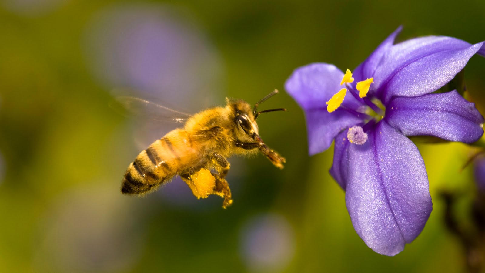

Solución
A corto plazo, el primer paso es prohibir los productos tóxicos para las abejas actualmente en uso, y hacer que la evaluación de riesgos de los plaguicidas sea mucho más estricta. Por otro lado, deben ponerse en marcha planes integrales de acción para salvar a las abejas. Y la solución definitiva es la adopción de la agricultura ecológica como única vía para una producción de alimentos respetuosa con todos los habitantes del planeta.
La agricultura ecológica garantiza una producción sana y sostenible, ya que protege el suelo, el agua y el clima, promueve la biodiversidad, no contamina el medioambiente con agroquímicos ni transgénicos y respeta la salud de las personas.

Este cambio lo puede iniciar la clase política, apostando por un modelo de agricultura ecológica y legislando en consonancia; los agricultores y agricultoras, cambiando sus prácticas de cultivo; y las empresas, desarrollando líneas de productos y técnicas ecológicas. Y, por supuesto, también personas como tú, demandando y consumiendo productos ecológicos y locales.
Para muchos de nosotros las abejas no son simples insectos, son seres vivos como nosotros que tienen una funcion en el mundo.

Alan

Yehiely

Mafer